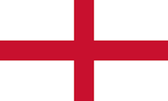
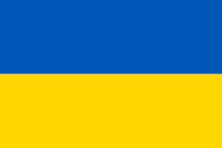
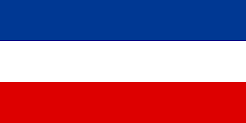
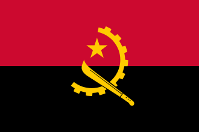
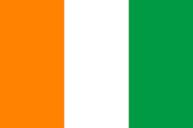
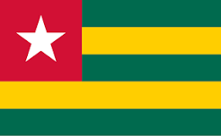
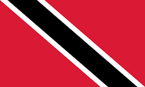

¿De qué se trató el Mundial de 2006?
La Copa Mundial de la FIFA 2006 fue la decimoctava edición del torneo y se disputó en Alemania entre el 9 de junio y el 9 de julio de 2006. Esta cita marcó el regreso del certamen a suelo alemán tras 32 años (luego de la edición de 1974 celebrada en la entonces Alemania Occidental). El evento estuvo impregnado de una atmósfera festiva e integradora bajo el lema oficial "El mundo entre amigos" (Die Welt zu Gast bei Freunden), consolidando una de las producciones logísticas y de infraestructura más perfectas en la historia del deporte mundial.
El campeonato estuvo marcado por hitos institucionales de enorme relevancia histórica. En el plano de los galardones, se continuó utilizando el trofeo oficial estrenado en 1974: la Copa Mundial de la FIFA, diseñada por Silvio Gazzaniga. A nivel organizativo, el formato se mantuvo firme con 32 selecciones distribuidas en 8 grupos de 4 equipos. Sin embargo, en el aspecto reglamentario, este torneo pasó a la historia por eliminar definitivamente la regla del "Gol de Oro" o "Gol de Plata" en las prórrogas, regresando al formato clásico de dos tiempos extras obligatorios de 15 minutos antes de proceder a la tanda de penaltis.
En el plano futbolístico, la Copa del Mundo de 2006 ofreció un nivel técnico superlativo, sirviendo además como el escenario de despedida para leyendas absolutas como Zinedine Zidane. La selección de Italia, dirigida por Marcello Lippi, estructuró un bloque defensivo casi impenetrable y un juego colectivo armónico. En la gran final, disputada en el Olympiastadion de Berlín ante unos 69.000 espectadores, Italia se coronó campeona tras derrotar a Francia en la tanda de penaltis (5-3) luego de empatar 1-1 en los 120 minutos reglamentarios, un duelo inmortalizado por la expulsión de Zidane tras propinar un cabezazo a Marco Materazzi.
Italia consiguió de esta forma su cuarto campeonato mundial, quebrando una sequía de 22 años y consolidando la era dorada de su generación.
Informacion que tenes que saber
Info general
- País Anfitrión: Alemania
- Fecha de Inicio:
9 de Junio de 2006
(09/06/2006) - Fecha de Finalizacion:
9 de Julio de 2006
(09/07/2006) - Duracion: 31 dias
- Organizador: FIFA
- Edicion: XVIII
Estadisticas
- Partidos jugados: 64
- Goles anotados: 147
- Promedio de gol: 2,30 por partido
- Máximo goleador:
Miroslav Klose (Alemania)
(5 goles) - Final:
Italia 1-1 (5-3 pen.) Francia
info de la Ciudad
- Ciudades Sede: 12
- Selecciones Participantes: 32
- Estadios Utilizados: 12
- Estadio Principal:
Olympiastadion (Berlín) - Asistencia total:
3.359.439 espectadores
Podio
| Posicion | Seleccion | Bandera |
|---|---|---|
| 1º Puesto | Italia |  |
| 2º Puesto | Francia |  |
| 3º Puesto | Alemania |  |
| 4º Puesto | Portugal |  |
(Nota: Italia se consagró campeona del mundo por cuarta vez en su historia, quebrando una sequía de 22 años, tras vencer a Francia en la tanda de penaltis (5-3) luego de un empate 1-1 en los 120 minutos. El tercer puesto quedó en manos de la anfitriona Alemania).
Historia completa de la Copa Mundial de la FIFA 2006
Alemania se adjudicó la sede en julio del año 2000 tras vencer en una votación dramática y milimétrica a la candidatura de Sudáfrica por 12 votos a 11, luego de la célebre abstención del neocelandés Charlie Dempsey. El torneo se jugó en estadios vanguardistas e hiperconectados, muchos de ellos remodelados con techos retráctiles y pantallas panorámicas colosales.
La fase de grupos regaló momentos de alta intensidad dramática. Argentina firmó uno de los mejores partidos colectivos de su historia contemporánea al golear 6-0 a Serbia y Montenegro, incluyendo una obra de arte de 26 pases consecutivos que culminó en gol de Esteban Cambiasso, además del debut y primer gol mundialista de un joven Lionel Messi. Por su parte, la selección de Ghana se erigió en el orgullo africano al clasificar a octavos de final en un grupo complejo junto a Italia y la República Checa.
Desarrollo del torneo
La fase de eliminación directa elevó los niveles de fricción al extremo. En los octavos de final, las selecciones de Portugal y Países Bajos protagonizaron en Núremberg el partido más violento de la historia de los mundiales: la legendaria "Batalla de Núremberg", donde el árbitro Valentin Ivanov mostró un récord histórico de 16 tarjetas amarillas y 4 tarjetas rojas. Francia, que venía siendo duramente criticada en su país, resucitó de la mano de un Zinedine Zidane monumental, quien dictó una cátedra absoluta de fútbol en cuartos de final eliminando a la súper favorita Brasil por 1-0 con gol de Thierry Henry.
En las semifinales se cruzaron cuatro potencias europeas. En un choque para la eternidad en Dortmund, Italia rompió el invicto histórico de Alemania en dicho feudo venciéndola 2-0 en el último minuto de la prórroga con goles agónicos de Fabio Grosso y Alessandro Del Piero. En la otra semifinal, Francia se impuso a Portugal para sellar su pase a la gran final de Berlín.
La gran final
En la final de Berlín, el suspenso llegó a su cénit. Zidane adelantó a Francia de penalti "a lo Panenka" y Materazzi empató de cabeza. En el tiempo extra, una agresión verbal de Materazzi provocó la furia de Zidane, quien le propinó un brutal cabezazo en el pecho, ganándose la tarjeta roja directa en el último partido de su carrera profesional.
En los penaltis, el disparo al larguero de David Trezeguet condenó a Francia, y Fabio Grosso ejecutó con maestría el penalti definitivo para bordar la cuarta estrella en el pecho azzurro.
Italia consiguió así su cuarto campeonato mundial, quebrando una sequía de 22 años y consolidando la era dorada de su generación.
⚽ Pelota Oficial del Mundial 2006

ADIDAS +TEAMGEIST
El +Teamgeist ("Espíritu de Equipo") fue el balón oficial de la Copa Mundial de la FIFA Alemania 2006, fabricado por la firma alemana Adidas. Rompió con la tradicional estructura de 32 paneles hexagonales vigente desde México 1970, presentando una configuración radical de solo 14 paneles curvos termosellados.
Información General
Nombre: Adidas +Teamgeist
Fabricante: Adidas (Alemania)
Material: 14 paneles curvos termosellados, eliminando casi por completo las costuras tradicionales
Diseño: Colores tradicionales blanco y negro con elegantes vivos dorados inspirados en el trofeo mundialista
Torneo: Copa Mundial FIFA Alemania 2006
Características
- Ruptura radical con la estructura de 32 paneles hexagonales vigente desde 1970.
- Su menor número de uniones ofrecía una superficie perfectamente esférica y uniforme.
- Aumentaba la precisión del disparo y reducía drásticamente la absorción de agua en caso de lluvia.
- Para la gran final se diseñó una versión exclusiva con detalles completamente dorados llamada +Teamgeist Berlin.
- Representó un salto tecnológico significativo respecto al Fevernova de 2002.
Dato curioso
Gracias a su superficie casi sin costuras, el +Teamgeist mantenía sus propiedades físicas inalterables durante el juego, incluso bajo lluvia, convirtiéndose en uno de los balones más innovadores de la historia mundialista.
Selecciones Participantes
Europa
Alemania (Anfitrión) 
Inglaterra Italia Francia  España
España  Países Bajos Portugal
Países Bajos Portugal  Suecia
Suecia  Suiza
Suiza  Croacia
Croacia  República Checa
República Checa  Polonia
Polonia 
Ucrania
Serbia y MontenegroDebutantes notables

Angola
Costa de Marfil Ghana
Ghana 
Togo
Trinidad y TobagoSudamérica
 Argentina
Argentina  Brasil
Brasil  Ecuador
Ecuador  Paraguay
Paraguay Norteamérica, Centroamérica y Caribe
 Estados Unidos
Estados Unidos  México
México  Costa Rica
Costa Rica Asia
 Japón
Japón  Corea del Sur
Corea del Sur  Arabia Saudita
Arabia Saudita  Irán
Irán África
Ghana  Túnez
Túnez Oceanía
 Australia
Australia
Sedes |
|||
|---|---|---|---|
|
El Mundial de 2006 se disputó en doce ciudades sede y doce estadios alemanes vanguardistas e hiperconectados, muchos de ellos remodelados con techos retráctiles y pantallas panorámicas colosales. El Olympiastadion de Berlín fue la sede principal del torneo, albergando la gran final entre Italia y Francia ante cerca de 69.000 espectadores. En total se jugaron 64 partidos repartidos entre los doce estadios, con una asistencia total de 3.359.439 espectadores a lo largo de todo el campeonato. (Nota: Por normativas estrictas de patrocinio de la FIFA, los estadios comerciales debieron modificar sus nombres oficiales por denominaciones genéricas durante el desarrollo del torneo). |
|||
| Nombre del Estadio | Ciudad | Capacidad aprox. | Partidos Jugados |
Olympiastadion |
Berlín | 72.000 | 6 (incl. la Gran Final) |
FIFA WM-Stadion München (Allianz Arena) |
Múnich (Baviera) | 66.000 | 6 (incl. el Partido Inaugural) |
Westfalenstadion (FIFA WM-Stadion Dortmund) |
Dortmund (Renania del Norte-Westfalia) | 65.000 | 6 |
Gottlieb-Daimler-Stadion (MHPArena) |
Stuttgart (Baden-Wurtemberg) | 52.000 | 6 |
Arena AufSchalke (FIFA WM-Stadion Gelsenkirchen) |
Gelsenkirchen (Renania del Norte-Westfalia) | 52.000 | 5 |
AOL Arena (FIFA WM-Stadion Hamburg) |
Hamburgo | 50.000 | 5 |
Waldstadion (FIFA WM-Stadion Frankfurt) |
Fráncfort (Hesse) | 48.000 | 5 |
RheinEnergieStadion (FIFA WM-Stadion Köln) |
Colonia (Renania del Norte-Westfalia) | 45.000 | 5 |
Zentralstadion (Red Bull Arena) |
Leipzig (Sajonia) | 43.000 | 5 |
AWD-Arena (FIFA WM-Stadion Hannover) |
Hannover (Baja Sajonia) | 43.000 | 5 |
Frankenstadion (EasyCredit-Stadion) |
Núremberg (Baviera) | 41.000 | 5 |
Fritz-Walter-Stadion |
Kaiserslautern (Renania-Palatinado) | 41.000 | 5 |
Formato del torneo
El mundial de 2006 ejecutó la estructura de competición tradicional sin variantes logísticas transfronterizas:
Primera Fase de Grupos: Las 32 selecciones se organizaron en 8 grupos (del A al H) de 4 equipos cada uno. Avanzaron a la siguiente fase únicamente los dos mejores de cada zona.
Fase de Eliminación Directa: Cruces tradicionales a partido único desde Octavos de Final hasta la Gran Final. Se suprimió por completo el "Gol de Oro". En caso de empate al cabo de los 90 minutos reglamentarios, se jugaron dos tiempos extra obligatorios de 15 minutos cada uno. De persistir la paridad, el ganador se definió mediante tiros desde el punto de penalti.
Árbitros de la Copa Mundial de la FIFA 2006 por pais
| Arbitros | Pais |
|---|---|
| Horacio Elizondo (Árbitro del partido inaugural y de la gran final — hito histórico) | |
| Benito Archundia | |
| Jorge Larrionda |  |
| Valentin Ivanov |  |
| Markus Merk | |
| Peter Fröjdfeldt | |
| Graham Poll | |
| Carlos Chandía |  |
| Luis Medina Cantalejo | |
| Frank De Bleeckere |  |
| Oscar Ruiz |  |
| Shamsul Maidin |  |
Este mundial estuvo caracterizado por una directriz extremadamente rígida de la Comisión de Árbitros de la FIFA para castigar con tarjeta de forma inmediata las sujeciones en el área y los golpes con el codo, lo que disparó las estadísticas de amonestaciones.
Resumen del torneo — Copa Mundial de la FIFA 2006
Primera Fase de Grupos
La fase de grupos regaló momentos de alta intensidad dramática. Argentina firmó uno de los mejores partidos colectivos de su historia contemporánea al golear 6-0 a Serbia y Montenegro, incluyendo una obra de arte de 26 pases consecutivos que culminó en gol de Esteban Cambiasso, además del debut y primer gol mundialista de un joven Lionel Messi. Por su parte, la selección de Ghana se erigió en el orgullo africano al clasificar a octavos de final en un grupo complejo junto a Italia y la República Checa.
Fase de Eliminación Directa
Octavos de Final
Portugal
1:0
Países Bajos
Portugal y Países Bajos protagonizaron la legendaria "Batalla de Núremberg", el partido más violento de la historia de los mundiales: el árbitro Valentin Ivanov mostró un récord histórico de 16 tarjetas amarillas y 4 tarjetas rojas.
Italia
1:0
Australia
Con el marcador 0-0 en el minuto 93, el lateral italiano Fabio Grosso ingresó al área y se dejó caer ante el defensor Lucas Neill. El árbitro Luis Medina Cantalejo sentenció un penalti sumamente polémico que Francesco Totti convirtió en gol, eliminando a los oceánicos.
Cuartos de Final
Francia
1:0
Brasil
Un Zinedine Zidane monumental dictó una cátedra absoluta de fútbol, eliminando a la súper favorita Brasil con gol de Thierry Henry.
Semifinales
Semifinal 1
Alemania
0:2
Italia
Italia rompió el invicto histórico de Alemania en su propio feudo, venciéndola en el último minuto de la prórroga con goles agónicos de Fabio Grosso y Alessandro Del Piero.
Semifinal 2
Portugal
0:1
Francia
Francia se impuso a Portugal para sellar su pase a la gran final de Berlín.
Gran Final
Finalistas
Italia FranciaFinal
Italia 1 (5 pen.) Francia 1 (3 pen.)(Zidane adelantó a Francia de penalti "a lo Panenka" y Materazzi empató de cabeza. En el tiempo extra, Zidane fue expulsado tras propinarle un cabezazo a Materazzi. En los penaltis, David Trezeguet estrelló su disparo en el larguero y Fabio Grosso ejecutó el penalti definitivo, dándole a Italia su cuarta estrella mundial.)
Máximos goleadores — Copa Mundial de la FIFA 2006
| Jugador | Goles | Pais |
|---|---|---|
| Miroslav Klose | 5 | |
| Hernán Crespo | 4 | |
| Ronaldo | 3 | |
| Zinedine Zidane | 3 | |
| Thierry Henry | 3 | |
| Fernando Torres | 3 | |
| David Villa | 3 | |
| Lukas Podolski | 3 | |
| Maxi Rodríguez | 3 | |
Máximos Asistidores (Premio a la Creación de Juego) — Copa Mundial de la FIFA 2006
| Jugador | Asistencias | Pais |
|---|---|---|
| Juan Román Riquelme | 4 | |
| Francesco Totti | 4 | |
| Luis Figo | 3 | |
| Bastian Schweinsteiger | 3 | |
| Andrea Pirlo | 3 | |
Autogoles Registrados (Goles en Contra) — Copa Mundial de la FIFA 2006
El torneo registró un total de 4 autogoles a lo largo de los 64 partidos disputados:
| Jugador | A favor de | Pais | Fase |
|---|---|---|---|
| Carlos Gamarra | Inglaterra | |
Fase de Grupos |
| Brent Sancho | Paraguay | Fase de Grupos | |
| Cristian Zaccardo | Estados Unidos | |
Fase de Grupos |
| Petit | Alemania | |
Partido por el Tercer Puesto |
Equipo estelar — Copa Mundial de la FIFA 2006
Elegido por el Grupo de Estudios Técnicos de la FIFA, el equipo ideal reflejó el dominio de Italia, campeona del torneo, junto al gran nivel mostrado por Francia, Alemania, Argentina, Brasil, Inglaterra y Portugal.
| Jugador | Posición | Pais |
|---|---|---|
| Gianluigi Buffon | Portero | |
| Jens Lehmann | Portero | |
| Ricardo | Portero | |
| Roberto Ayala | Defensa | |
| John Terry | Defensa | |
| Lilian Thuram | Defensa | |
| Philipp Lahm | Defensa | |
| Fabio Cannavaro | Defensa | |
| Gianluca Zambrotta | Defensa | |
| Ricardo Carvalho | Defensa | |
| Zé Roberto | Mediocampista | |
| Patrick Vieira | Mediocampista | |
| Zinedine Zidane | Mediocampista | |
| Michael Ballack | Mediocampista | |
| Andrea Pirlo | Mediocampista | |
| Gennaro Gattuso | Mediocampista | |
| Francesco Totti | Mediocampista | |
| Luís Figo | Mediocampista | |
| Maniche | Mediocampista | |
| Hernán Crespo | Delantero | |
| Thierry Henry | Delantero | |
| Miroslav Klose | Delantero | |
| Luca Toni | Delantero | |
Premios Oficiales — Copa Mundial de la FIFA 2006
| Premio | Jugador | Pais |
|---|---|---|
| 🥇 Mejor Jugador (Balón de Oro) | Zinedine Zidane | |
| ⚽ Ganador de la Bota de Oro | Miroslav Klose (5 goles) | |
| 🧤 Mejor Portero (Premio Lev Yashin) | Gianluigi Buffon | |
| 👶 Mejor Jugador Joven | Lukas Podolski | |
| ✨ Gol del Torneo | Maxi Rodríguez | |
| 🤝 Premio Fair Play | Selecciones de Brasil y España (Empate) | |
| 🤩 Premio al Equipo Más Entretenido | Selección de Portugal | |
Controversias de la Copa Mundial de la FIFA 2006
El mundial de Alemania estuvo marcado por fallos arbitrales insólitos, deslices reglamentarios históricos y acusaciones cruzadas de simulación.
-
Croacia - Australia: el descontrol de Graham Poll
La controversia reglamentaria más bochornosa de la historia moderna de los mundiales se escenificó en Stuttgart durante el partido de fase de grupos entre Croacia y Australia. El experimentado árbitro inglés Graham Poll perdió por completo la cuenta de las amonestaciones y mostró tres tarjetas amarillas al defensor croata Josip Šimunić antes de expulsarlo definitivamente del terreno de juego (en los minutos 61', 90' y 93'). El escándalo provocó el retiro inmediato de Poll del arbitraje internacional a nivel de torneos FIFA.
-
Italia - Australia: el penalti de Kaiserslautern
En el cruce entre Italia y Australia en Kaiserslautern, el partido expiraba en un empate 0-0 que forzaba la prórroga; en el minuto 93, el lateral italiano Fabio Grosso ingresó al área y se dejó caer ante la barrera estática del defensor Lucas Neill. El juez Luis Medina Cantalejo sentenció un penalti inexistente sumamente polémico que Francesco Totti cambió por gol, eliminando a los oceánicos.
-
La "Batalla de Núremberg"
La ya mencionada "Batalla de Núremberg" entre Portugal y Países Bajos desató feroces críticas del mismísimo presidente de la FIFA, Joseph Blatter, quien declaró públicamente que el árbitro Valentin Ivanov se tendría que haber mostrado una tarjeta amarilla a sí mismo por su incapacidad para controlar los ánimos del encuentro.
-
El cabezazo de Zidane a Materazzi
La gran final de Berlín sumó la controversia de mayor impacto mediático del siglo. En el minuto 110, tras un intercambio de palabras hostiles provocadas por los insultos familiares del italiano Marco Materazzi, Zinedine Zidane reaccionó propinándole un violento golpe con la cabeza en el esternón del defensor. El árbitro Horacio Elizondo no presenció la acción directa de forma presencial, pero fue alertado detalladamente por el cuarto árbitro, el español Luis Medina Cantalejo, quien utilizó los monitores de asistencia de la zona técnica de televisión. Esto generó un agrio debate técnico en la época, ya que el videoarbitraje (VAR) no estaba autorizado legalmente, levantando sospechas sobre el uso de tecnologías externas de forma encubierta para decretar la expulsión de la máxima estrella gala.
Identidad del Torneo: Diseño, Marketing, Medios y la Era de la Alta Definición
La Revolución de la Inauguración
La ceremonia inaugural tuvo lugar el 9 de junio de 2006 en el recién estrenado Allianz Arena de Múnich, previo al vibrante partido de apertura en el que Alemania derrotó 4-2 a Costa Rica. El evento rompió con las pomposidades conceptuales anteriores y se centró en la rica herencia cultural de Baviera y Alemania. Contó con más de 150 ex campeones del mundo en el césped, liderados por Pelé y la supermodelo Claudia Schiffer portando el trofeo.
El show integró bailarines vestidos con pantalones de cuero tradicionales (Lederhosen) haciendo percusión rítmica con el suelo, entrelazados con música electrónica de vanguardia, proyectando una Alemania moderna, abierta y sumamente hospitalaria.
Mascota Oficial: "Goleo VI" y "Pille"
Fue un león antropomórfico de peluche de gran realismo creado por la compañía de Jim Henson. Vestía una camiseta blanca con el número 06 y no llevaba pantalones. Venía siempre acompañado por "Pille", un balón parlante con ojos y boca que aportaba el toque cómico.
A pesar de una fuerte controversia inicial en Alemania (debido a que el león es el símbolo tradicional de rivales históricos como Inglaterra o Países Bajos), Goleo VI terminó ganándose el afecto del público infantil y coleccionista a través de masivas campañas de televisión y su aparición en videos musicales de la mano de estrellas como Bob Sinclar.
Canción Oficial: "The Time of Our Lives"
Una majestuosa e imponente balada lírica pop interpretada de forma conjunta por el cuarteto de ópera-pop Il Divo y la cantante estadounidense Toni Braxton. Convivió en las radios con el masivo éxito rítmico oficial "Celebrate the Day" de Herbert Grönemeyer, y el icónico "Hips Don't Lie (Bamboo Version)" de Shakira, que encendió la antesala de la gran final.
Balón Oficial: Adidas +Teamgeist
Rompiendo con la tradicional estructura de 32 paneles hexagonales vigente desde México 1970, el +Teamgeist ("Espíritu de Equipo") revolucionó la industria al presentar una configuración radical de solo 14 paneles curvos termosellados, eliminando casi por completo las costuras tradicionales, con vivos dorados inspirados en el trofeo mundialista.
El Récord Histórico de las Clasificaciones
Un total de 197 asociaciones nacionales se inscribieron y compitieron activamente en las fases de clasificación continentales, un récord absoluto en la historia de la competición hasta ese momento. Por primera vez desde la instauración de la Copa del Mundo en 1930, el campeón defensor (Brasil) ya no obtuvo la clasificación automática, viéndose obligado a disputar las duras eliminatorias de la CONMEBOL, dejando únicamente a la anfitriona Alemania con el pase directo.
El filtro clasificatorio permitió el acceso por primera vez en su historia a 6 selecciones nacionales: Angola, Costa de Marfil, Ghana, Togo, Trinidad y Tobago, y Ucrania (esta última logrando una gesta espectacular al ser el primer equipo europeo en sellar su boleto directo en las canchas). Además, la República de Serbia y Montenegro compitió de forma unificada por última vez justo antes de disolverse como Estado independiente.
El Legado del Torneo
El certamen dejó un legado transformador: sirvió como escenario de despedida para Zinedine Zidane, consagró a Italia como tetracampeona mundial tras 22 años de espera, eliminó definitivamente la regla del "Gol de Oro" en las prórrogas, y dejó instalado el debate sobre el uso de tecnologías de asistencia arbitral años antes de la llegada oficial del VAR.
Tabla de Rendimiento y Posiciones Finales
| Posicion | Seleccion | Pts | PJ | PG | PE | PP | GF | GC | Dif | Rendimiento |
|---|---|---|---|---|---|---|---|---|---|---|
| 1 | Italia |
17 | 7 | 5 | 2 | 0 | 12 | 2 | +10 | 80,9% |
| 2 | Francia |
15 | 7 | 4 | 3 | 0 | 9 | 3 | +6 | 71,4% |
| 3 | Alemania |
16 | 7 | 5 | 1 | 1 | 14 | 6 | +8 | 76,2% |
| 4 | Portugal |
13 | 7 | 4 | 1 | 2 | 7 | 5 | +2 | 62,0% |
| 5 | Brasil |
12 | 5 | 4 | 0 | 1 | 10 | 2 | +8 | 80,0% |
| 6 | Argentina |
11 | 5 | 3 | 2 | 0 | 11 | 3 | +8 | 73,3% |
| 7 | Inglaterra | 11 | 5 | 3 | 2 | 0 | 6 | 2 | +4 | 73,3% |
| 8 | Ucrania | 7 | 5 | 2 | 1 | 2 | 5 | 7 | -2 | 46,6% |
| 9 | España |
9 | 4 | 3 | 0 | 1 | 9 | 4 | +5 | 75,0% |
| 10 | Suiza |
8 | 4 | 2 | 2 | 0 | 4 | 0 | +4 | 66,6% |
| 11 | Países Bajos |
7 | 4 | 2 | 1 | 1 | 3 | 2 | +1 | 58,3% |
| 12 | Ecuador |
6 | 4 | 2 | 0 | 2 | 5 | 4 | +1 | 50,0% |
| 13 | Ghana |
6 | 4 | 2 | 0 | 2 | 4 | 6 | -2 | 50,0% |
| 14 | Suecia |
5 | 4 | 1 | 2 | 1 | 3 | 4 | -1 | 41,6% |
| 15 | México |
4 | 4 | 1 | 1 | 2 | 5 | 5 | 0 | 33,3% |
| 16 | Australia |
4 | 4 | 1 | 1 | 2 | 5 | 6 | -1 | 33,3% |
| 17 | Corea del Sur |
4 | 3 | 1 | 1 | 1 | 3 | 4 | -1 | 44,4% |
| 18 | Paraguay |
3 | 3 | 1 | 0 | 2 | 2 | 2 | 0 | 33,3% |
| 19 | Costa de Marfil | 3 | 3 | 1 | 0 | 2 | 5 | 6 | -1 | 33,3% |
| 20 | República Checa |
3 | 3 | 1 | 0 | 2 | 3 | 4 | -1 | 33,3% |
| 21 | Polonia |
3 | 3 | 1 | 0 | 2 | 2 | 4 | -2 | 33,3% |
| 22 | Croacia |
2 | 3 | 0 | 2 | 1 | 2 | 3 | -1 | 22,2% |
| 23 | Angola | 2 | 3 | 0 | 2 | 1 | 1 | 2 | -1 | 22,2% |
| 24 | Túnez |
1 | 3 | 0 | 1 | 2 | 3 | 6 | -3 | 11,1% |
| 25 | Estados Unidos |
1 | 3 | 0 | 1 | 2 | 2 | 6 | -4 | 11,1% |
| 26 | Irán |
1 | 3 | 0 | 1 | 2 | 2 | 6 | -4 | 11,1% |
| 27 | Trinidad y Tobago | 1 | 3 | 0 | 1 | 2 | 0 | 4 | -4 | 11,1% |
| 28 | Arabia Saudita |
1 | 3 | 0 | 1 | 2 | 2 | 7 | -5 | 11,1% |
| 29 | Japón |
1 | 3 | 0 | 1 | 2 | 2 | 7 | -5 | 11,1% |
| 30 | Togo | 0 | 3 | 0 | 0 | 3 | 1 | 6 | -5 | 0,0% |
| 31 | Costa Rica |
0 | 3 | 0 | 0 | 3 | 3 | 9 | -6 | 0,0% |
| 32 | Serbia y Montenegro | 0 | 3 | 0 | 0 | 3 | 2 | 10 | -8 | 0,0% |
- PTS: PUNTOS
- PJ: PARTIDOS JUGADOS
- PG: PARTIDOS GANADOS
- PE: PARTIDOS EMPATADOS
- PP: PARTIDOS PERDIDOS
- GF: GOLES A FAVOR
- GC: GOLES EN CONTRA
- DIF: DIFERENCIA DE GOL
- RENDIMIENTO: BASADA EN LA EFECTIVIDAD DE PARTIDOS (PG, PE, PP)